This is an advanced version of project 1 which provides:
NOTE: Our implementation for delivering activity to client is synchronous, so that you may need to wait a period of time before you can actually receive an activity (default period is 1 second)
You need maven for this build:
cd $project_folder./build.shTwo jar files will be generated under $project_folder.
There are two JAR files in source code package, ActivityStreamerClient.jar and ActivityStreamerServer.jar.
usage: ActivityStreamer.Server [-a <arg>] [-activity_check_interval <arg>] [-lh <arg>] [-lp <arg>] [-rh <arg>] [-rp <arg>] [-s <arg>] [-sync_interval <arg>] [-time_before_reconnect <arg>]An ActivityStream Server for Unimelb COMP90015 -a <arg> announce interval in milliseconds -lh <arg> local hostname -lp <arg> local port number -rh <arg> remote hostname -rp <arg> remote port number -s <arg> secret for the server to use -sync_interval <arg> Provide the interval (in milliseconds, 5000 by default) to sync data amoung servers. -time_before_reconnect <arg> Provide the time (in milliseconds, 0 by default) to wait before reconnect if a server crashes, mainly for testing eventually consistancy -activity_check_interval <arg> Provide the interval (in milliseconds, 1000 by default) to check whether there is new activity coming in. usage: ActivityStreamer.Client [-rh <arg>] [-rp <arg>] [-s <arg>] [-u <arg>]An ActivityStream Client for Unimelb COMP90015 -rh <arg> remote hostname -rp <arg> remote port number -s <arg> secret for username, if not provided, run "register" process -u <arg> username, if not provided, login as "anonymous".
Per projectspecification, this system is supposed to achieve following functions:
Our implementationfor delivering activity to clients is synchronous, so you may need to wait aperiod of time before you can actual receive an activity, default period is 1second.
Six scenarios havebeen designed for test case.
NOTE: All test screenshot shown below are using our new version client which is more useful for debug. If you want to test the last version client(client of project1) , change the command to user ActivityStreamerClient-old.jar as the client jar package. The old version also passed all these test cases.
java -jar ActivityStreamerServer.jar -lh localhost -lp 8001 -s abcjava -jar ActivityStreamerServer.jar -lh localhost -lp 8002 -s abc -rh localhost -rp 8001java -jar ActivityStreamerServer.jar -lh localhost -lp 8003 -s abc -rh localhost -rp 8001java -jar ActivityStreamerServer.jar -lh localhost -lp 8006 -s abc -rh localhost -rp 8001Click Close icon in server UI or press CTRL+C in command line
After that you will see server 8002, 8003, 8006 will automatically connected. The picture shows a successful situation (the one, 8002, that takes 8001's place may vary).
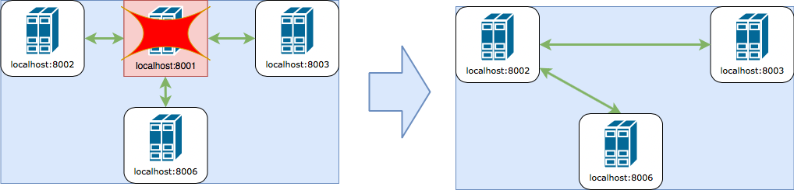
After 4 servers were started:
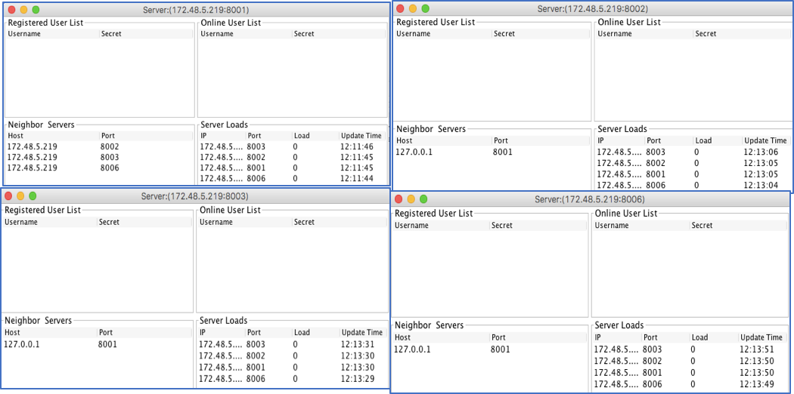
After force quit server 8001:
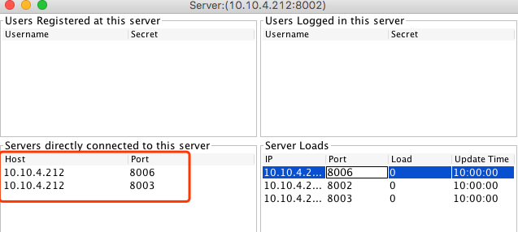
As expected.
java -jar ActivityStreamerServer.jar -lh localhost -lp 8001 -s abc java -jar ActivityStreamerClient.jar -u user1 -rp 8001 -rh localhost java -jar ActivityStreamerServer.jar -lh localhost -lp 8002 -s abc -rh localhost -rp 8001$secret by actual secret) java -jar ActivityStreamerClient.jar -u user1 -s $secret -rp 8002 -rh localhost User1 should login on new server 8002 successfully, and all data of 8002 should be consistent with 8001.
Register success and auto login with given secret
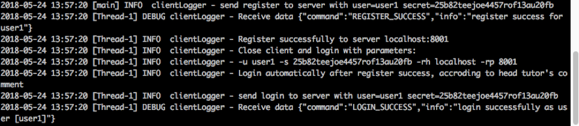
User1 relogin on 8002 (user1 login successfully, 8001 and 8002 is consistent)
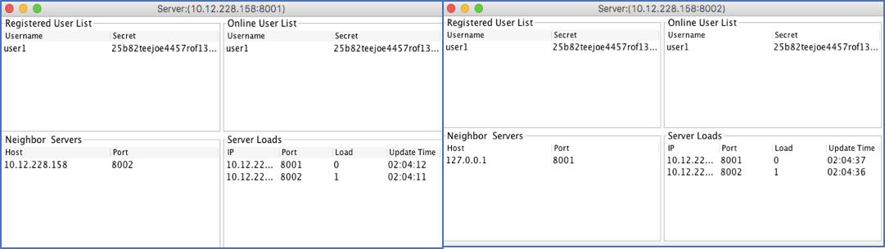
Result as expected.
java -jar ActivityStreamerServer.jar -lh localhost -lp 8001 -s abc java -jar ActivityStreamerClient.jar -u user1 -rp 8001 -rh localhost java -jar ActivityStreamerServer.jar -lh localhost -lp 8002 -s abc -rh localhost -rp 8001$secret of below script java -jar ActivityStreamerClient.jar -u user1 -s $secret -rp 8002 -rh localhostuser1 should login successfully at new server (8002) and all data of 8002 should be synced with 8001
From test case Message ensure we can also see that:
user A is online at the time T, when a activity is sent by some other user B and A loses its connection it can receive this message.
When user A reconnects to any server of this system, it can also receive this lost message.
Snapshot of register success and auto login with given secret
Snapshot of user1 relogin on 8002 (user1 login successfully, 8001 and 8002 is consistent)
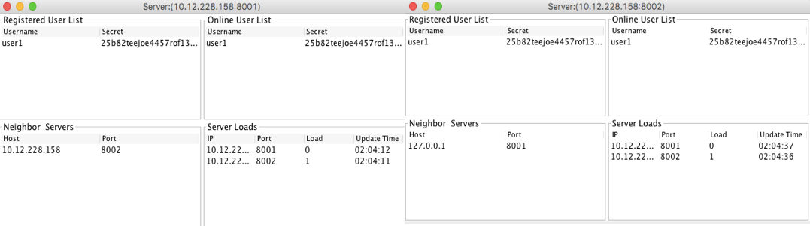
Result as expected.
java -jar ActivityStreamerServer.jar -lh localhost -lp 8001 -s abcjava -jar ActivityStreamerServer.jar -lh localhost -lp 8002 -s abc -rh localhost -rp 8001java -jar ActivityStreamerServer.jar -lh localhost -lp 8002 -s abc -rh localhost -rp 8001 java -jar ActivityStreamerClient.jar -u user1 -rp 8001 -rh localhost java -jar ActivityStreamerClient.jar -u user1 -rp 8002 -rh localhostSnapshot of 3 servers’ GUI
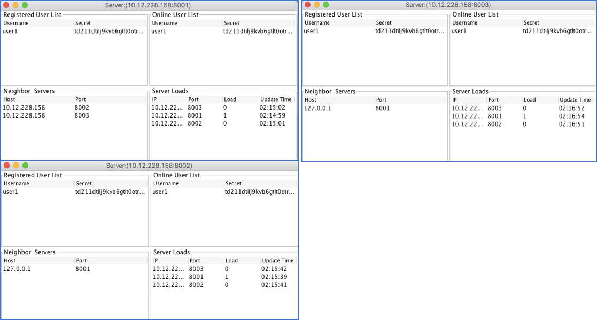
Snapshot of error message (user1 already exists in server)
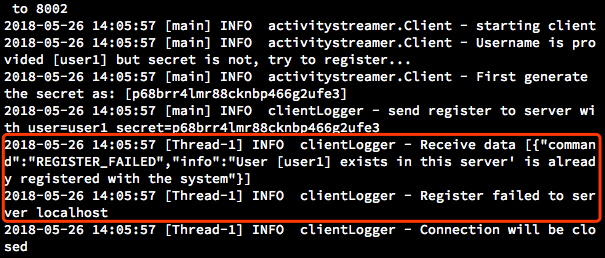
Result as excepted.
In order to simulate message loss case, let us start servers with a parameter to delay the reconnection function.
time_before_reconnect=10000 (10 seconds) # start the very first server, which will be terminatedjava -jar ActivityStreamerServer.jar -lh localhost -lp 8001 -s abc # start other servers java -jar ActivityStreamerServer.jar -lh localhost -lp 8002 -s abc -rh localhost -rp 8001 -time_before_reconnect 10000java -jar ActivityStreamerServer.jar -lh localhost -lp 8003 -s abc -rh localhost -rp 8001 -time_before_reconnect 10000java -jar ActivityStreamerServer.jar -lh localhost -lp 8006 -s abc -rh localhost -rp 8001 -time_before_reconnect 10000Note: Please record the secret of user1 for future use
# Keept the secret after register successfullyjava -jar ActivityStreamerClient.jar -u user1 -rp 8001 -rh localhost # you can just run below 2 clients and no need to record their secretrsjava -jar ActivityStreamerClient.jar -u user2 -rp 8002 -rh localhostjava -jar ActivityStreamerClient.jar -u user3 -rp 8003 -rh localhost{"a":1} from user2.Replace $secret of below script with the secret from step 2.
java -jar ActivityStreamerClient.jar -u user1 -s $secret -rp 8006 -rh localhostuser A is online at the time T, when a activity is sent by some other user B and A loses its connection it can receive this message.
When user A reconnects to any server of this system, it can also receive this lost message.
clients login on 8001,8002, 8003 respectively
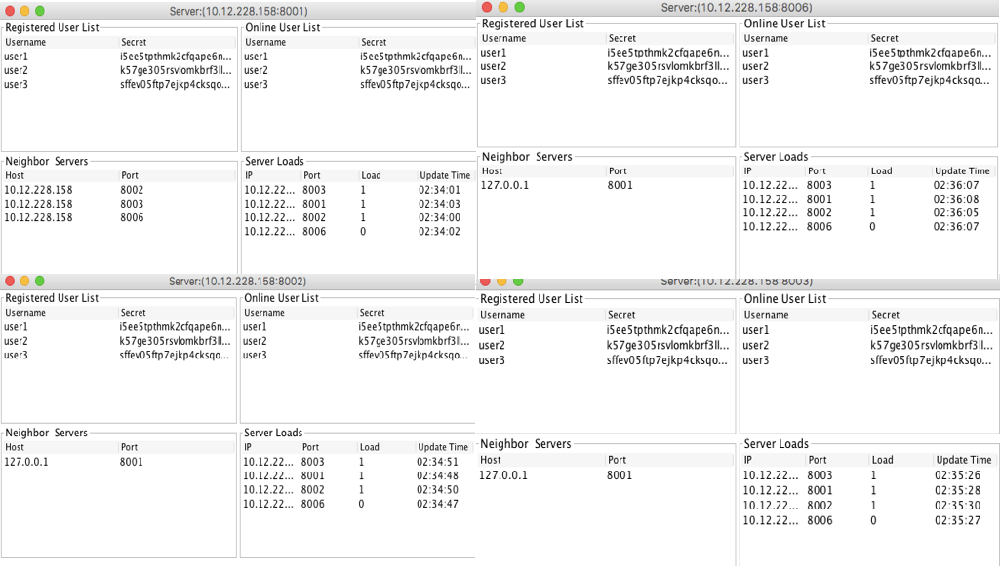
clients after reconnection(user1, user2, user3 all received activity from user2)
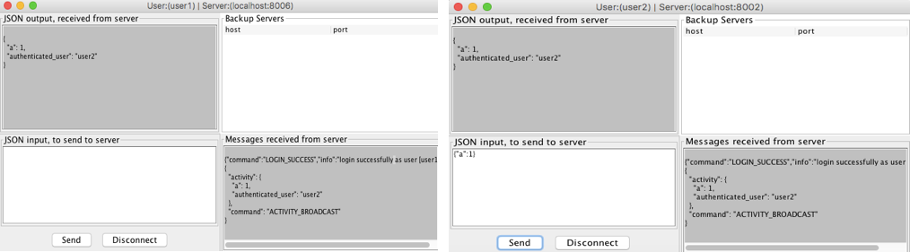
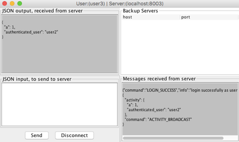
Result as excepted.
In order to simulate message disorder case, let us use a telnet session to simulate a server and make the order checking period a littler longer with activity_check_interval=10000. Fake messages will be broadcasted by the telnet server with a hooker "backTime" to set the send time of fake messages to be a time in the past.
'timeBack' field is a back door used for this kind of testing. If that field exists in an ActivityBroadcast message, then set the
sendTimeof this activity tocurrentTimeInMillis() - timeBack
activity_check_interval=10000 (10 seconds) java -jar ActivityStreamerServer.jar -activity_check_interval 10000 -lh localhost -lp 8001 -s abc java -jar ActivityStreamerClient.jar -u user1 -rp 8001 -rh localhost telnet localhost 8001 {"command":"AUTHENTICATE","serverId":"serverId01","secret":"abc","host":"localhost","port":8002}You can ignore the message telnet session receives. All of them are used by real server to sync data.
Message 1: a "fake" message that was sent 0 second ago
{"id":0,"activity":{"message_num":2,"authenticated_user":"user2"},"isDelivered":false,"command":"ACTIVITY_BROADCAST","timeBack":0}Message 2: a "fake" message that was sent 10 seconds ago, which is early than preious one.
{"id":0,"activity":{"message_num":1,"authenticated_user":"user2"},"isDelivered":false,"command":"ACTIVITY_BROADCAST","timeBack":10000}In real server, this order checking period can be relately shorter, like 0.5 or 1 second.
Telnet session input (in white, you can ignore other information, they are sync message from server)
The 3rd white block shows the ordered message list, in which the first is the one with message_num=1
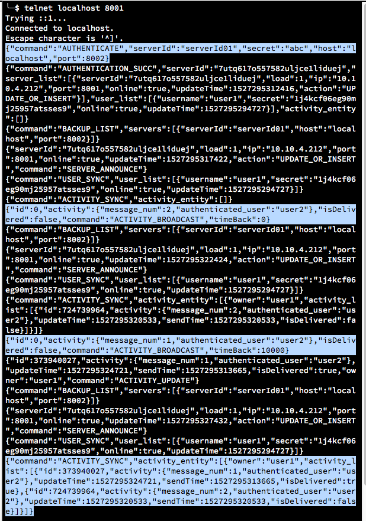
Messages user1 received (message_num1 is before message_num 2)
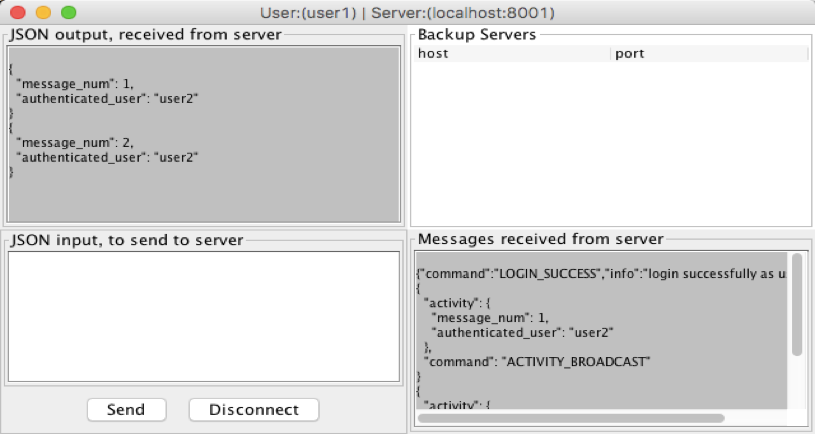
Result as excepted.
java -jar ActivityStreamerServer.jar -lh localhost -lp 8001 -s abcjava -jar ActivityStreamerServer.jar -lh localhost -lp 8002 -s abc -rh localhost -rp 8001 java -jar ActivityStreamerClient.jar -u user1 -rp 8001 -rh localhostjava -jar ActivityStreamerClient.jar -u user2 -rp 8001 -rh localhostStarting 2 servers
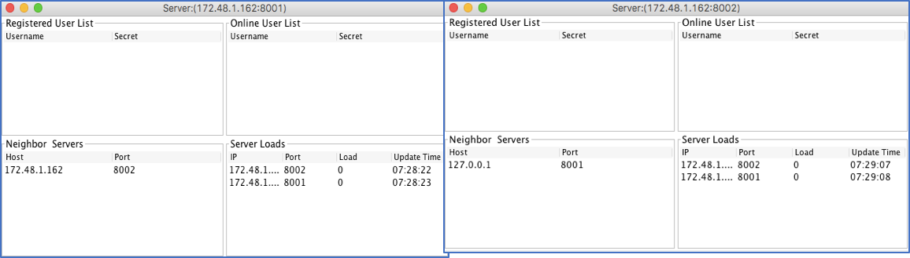
After two clients login(load of each server has been changed to 1)
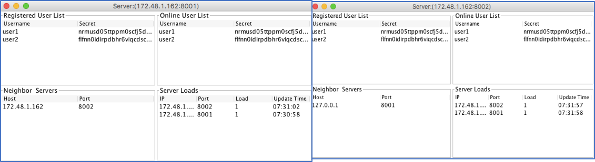
Result as excepted.